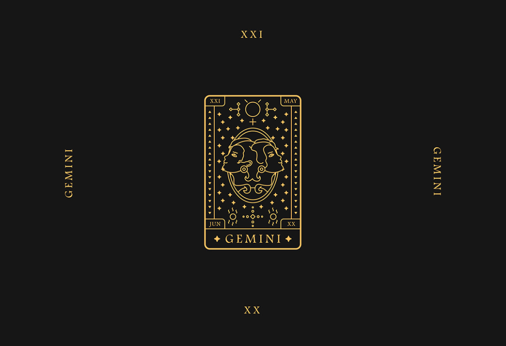

Géminis
La primera interacción que debes llevar a cabo con un Géminis no es preguntarle qué tal o cómo está, sino con qué gemelo de los dos que representan su símbolo se ha levantado hoy. La característica que más define a los nacidos del 21 de mayo al 20 de junio es sus dos caras, en cuanto a personalidad se refiere. Un día se despiertan felices, después se les cruza el cable, más tarde te quieren mucho y, cuando cae la noche, prefieren no verte la cara. En otras palabras, su manera de actuar y mood emocional van cambiando según pasan las horas, llegando a parecer incluso personas distintas. Bipolaridad, sí.
